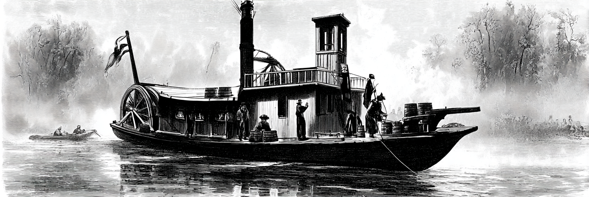
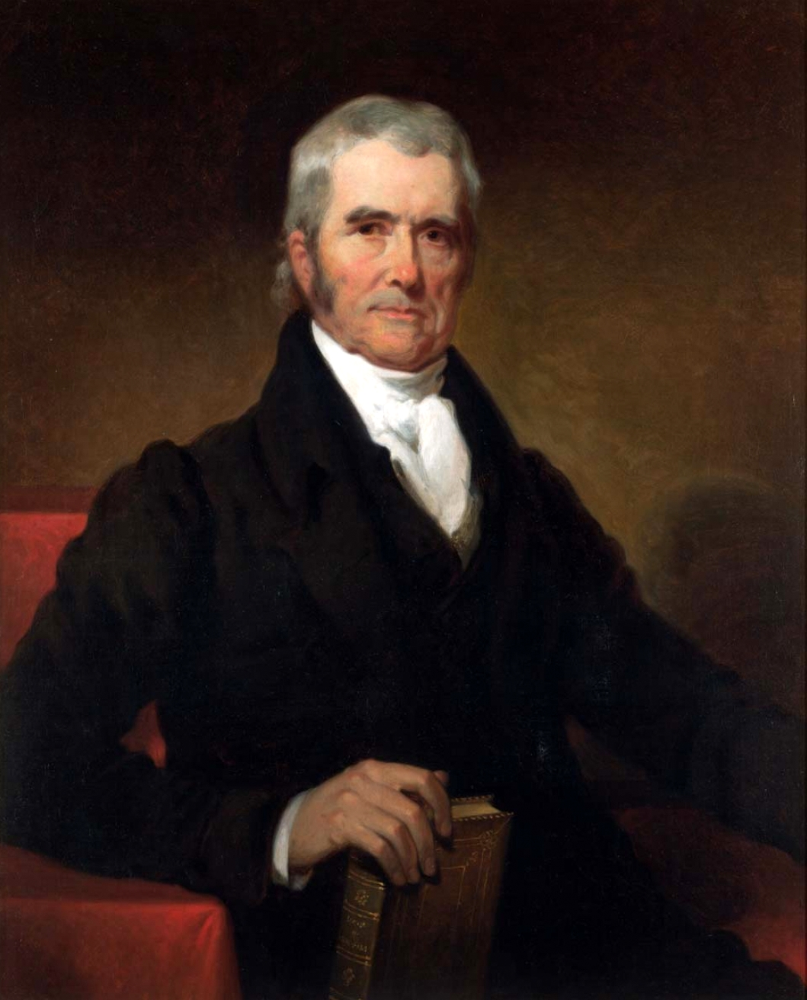
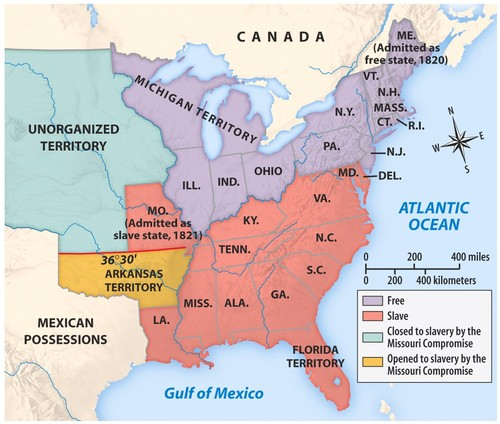

Explain the three parts of the American System and why they work as a "system"
Analyze how Marshall Court decisions shifted power from states to federal government
Argue whether the Missouri Compromise solved or merely postponed the sectional crisis
Connect the Panic of 1819 to later political opposition to the Second Bank
The American System
National Republicans
By the end of the War of 1812, the Federalist Party was no longer a significant force in American Politics
Era of Good Feelings (one-party dominance)
Irony: Republicans adopt Federalist policies after Federalists disappear
Henry Clay's American System (1816)
Three interconnected policies to build American economic power:
1. Protective Tariff
Tax on foreign imports protects American manufacturers
Makes American-made goods competitive
2. Second Bank of the United States
National bank controls currency and credit
Provides stable financial system for growth
3. Federal Internal Improvements
Roads and canals connect markets
Farmers can get crops to ports; factories can ship goods
Why "System"? → Each part reinforces the others. Tariffs protect factories → factories need reliable banking → both need transportation to reach customers.

Internal Improvements: The Nationalist Dream Fails
The Constitutional Problem:
Constitution doesn't explicitly grant Congress power to build roads/canals
Madison vetoes Bonus Bill (1817): "I cannot find this power in the Constitution"
Monroe agrees: federal internal improvements unconstitutional
The Sectional Problem:
North/West: Want federally funded roads and canals
South: Opposes federal spending that mainly benefits other regions
Question: Who pays? Who benefits?
The Result: Federal government largely stays out • States build their own infrastructure (Erie Canal built by New York) • First crack in post-war nationalism
Commerce and the Law
John Marshall Reshapes American Government
John Marshall, Chief Justice (1801–1835)
Serves 34 years—longer than most presidents
Appointed by John Adams (Federalist), outlasts his party
Marshall's Project: Building Federal Power
Before Marshall → Weak federal government, strong states
After Marshall → Strong federal government, national economy

Chief Justice John Marshall (1755–1835)
How? Three landmark cases:
Can Congress create a national bank?
Can states break contracts?
Who controls interstate trade?
Watch for the pattern: Marshall consistently chooses federal power over state power
McCulloch v. Maryland (1819)
The Case:
State of Maryland levies tax on Baltimore branch of the Bank of the United States
Maryland's goal: Tax the Bank out of existence
Two Questions:
1. Does Congress have the right to charter a bank?
Marshall's answer: YES
Constitution grants "implied powers" beyond what's explicitly written
2. Can states tax federal agencies?
Marshall's answer: NO
"The power to tax is the power to destroy"
States cannot destroy what Congress creates
Significance: Establishes doctrine of "implied powers" • Federal law is supreme over state law
Dartmouth College v. Woodward (1819)
The Case:
New Hampshire tries to take over Dartmouth College
Wants to convert private college into state university
Marshall's Decision:
Original charter is a protected contract
States cannot violate or break private contracts
Even if "public good" might be served
Significance:
Businesses can hold charter privileges indefinitely
States cannot revoke corporate charters
Protects private property from state interference
Lays groundwork for corporate power
Gibbons v. Ogden (1824): Who Controls Trade?
The Conflict:
Aaron Ogden: Operates steamboats with New York state monopoly license
Thomas Gibbons: Operates steamboats with federal license
Both run steamboats in same waters (Hudson River/NY harbor)
Question: Whose license wins—state or federal?
Why It Matters:
If states control trade → 13+ different trade rules, barriers between states
If federal government controls trade → unified national market
Steamboat on the Mississippi River (c. 1824)
Marshall's Decision: Federal government has exclusive power over interstate commerce • State monopoly is unconstitutional • Federal law > State law
Marshall Court: Winners and Losers
The Pattern Across All Three Cases:
Federal power ↑ / State power ↓
National economy ↑ / Local control ↓
Business/property rights ↑ / Government regulation ↓
Who Benefits?
Federal government (more power)
Businesses and corporations (protected contracts, free trade)
Nationalists (unified country, strong center)
Who Loses?
State governments (less autonomy)
States' rights advocates (especially in South)
Those who fear concentrated power
The Legacy: Sets up conflicts that will explode in Nullification Crisis and ultimately Civil War
Marshall Court: Shifting the Balance of Power
FEDERAL POWER
STATE POWER
CORPORATE POWER
COMMERCE POWER (Federal control)
Key Principle: Federal supremacy over states in all disputes
Think About It
"If you were a cotton planter in Georgia in 1820, would you support Marshall's Supreme Court decisions? Why or why not?"
Consider:
Federal vs. state power—which do you want?
Protection of business contracts—does this help or hurt you?
Federal regulation of commerce—who benefits?
1 minute to think, then voluntary discussion
1819: Year of Crisis
Two major crises reveal the limits of post-war nationalism
The Argument over Missouri
The Request:
Missouri applies for statehood (first state from Louisiana Purchase)
Would enter as a slave state
The Challenge:
Rep. James Tallmadge Jr. (NY) proposes amendments:
Ban on importing enslaved people into Missouri
Gradual emancipation for those born after statehood (freedom at age 25)
Result: Would make Missouri a free state
The Reaction:
Fierce sectional debate in Congress
House (Northern majority) passes amendments
Senate (Southern control) blocks amendments
Congress deadlocks—first major sectional crisis over slavery's expansion
Missouri: It's About Power, Not Morality
Why This Debate Mattered: POLITICAL POWER
The Three-Fifths Compromise gives South extra representation:
Enslaved people count as 3/5 of a person for representation
In 1790: South holds 47% of House seats with only 40% of white population
Gives Jefferson the presidency in 1800 (electoral college advantage)
North fears this advantage grows with each new slave state
The Sectional Balance:
North dominates House (more total population)
South controls Senate (equal state representation: 11 free, 11 slave states)
Each new state tips the balance
Senator Rufus King (NY): Opposition based on "great political interests" and equality of representation—not humanitarian concern
The Missouri Compromise (1820)
The Deal:
Missouri admitted as slave state
Maine separated from Massachusetts, admitted as free state
Maintains Senate balance: 12 free states, 12 slave states
Slavery banned in Louisiana Purchase territory above 36°30' latitude
Drew a line across the western territories
The Reaction:
Temporarily resolves the crisis
But exposes deep rift between North and South
Thomas Jefferson: "a fire bell in the night"—warning of disaster ahead
The Missouri Compromise Line (36°30')

Missouri Compromise (1820) – Expansion of slavery and sectional balance
Take 20-30 seconds to study this map
Notice: Most of Louisiana Purchase would be free under this line • South realizes it's losing the long-term demographic/political game • This line will be fought over for the next 30 years
Think-Pair-Share
"The Missouri Compromise 'solved' the problem by drawing a line on a map. Why might this be a temporary solution rather than a permanent fix?"
Instructions:
Think individually (30 seconds)
Discuss with your neighbor (1-2 minutes)
Share with class (voluntary)
Possible insights: Line is arbitrary • Doesn't resolve underlying disagreement about slavery • What happens with territories that don't fit the line? • Both sides still want political power • Just postpones the conflict
The Panic of 1819: America's First Depression
First nationwide economic depression in U.S. history
The Perfect Storm (Three Causes):
1. International: European farms recover after Napoleonic Wars
Less demand for American grain
Crop prices collapse
2. Latin America: Revolutions disrupt gold/silver supplies